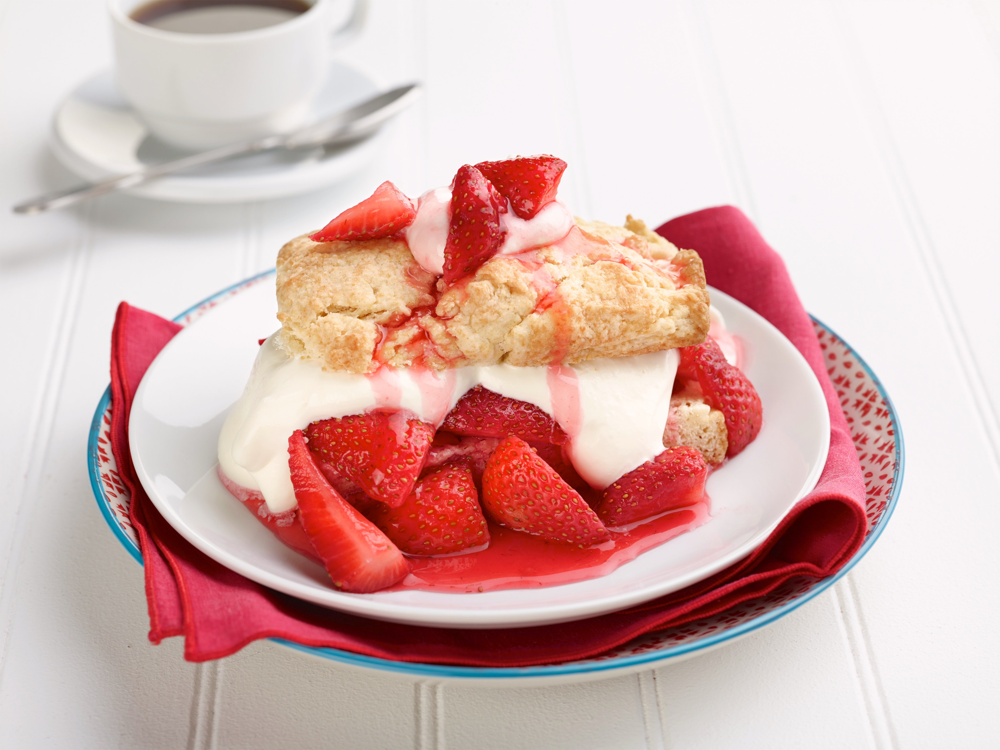
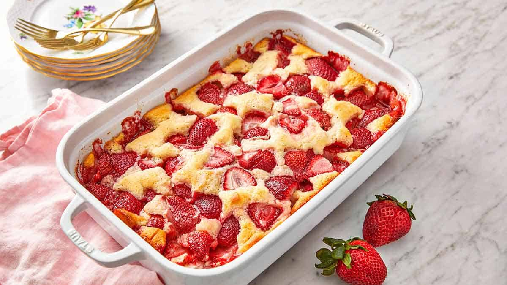
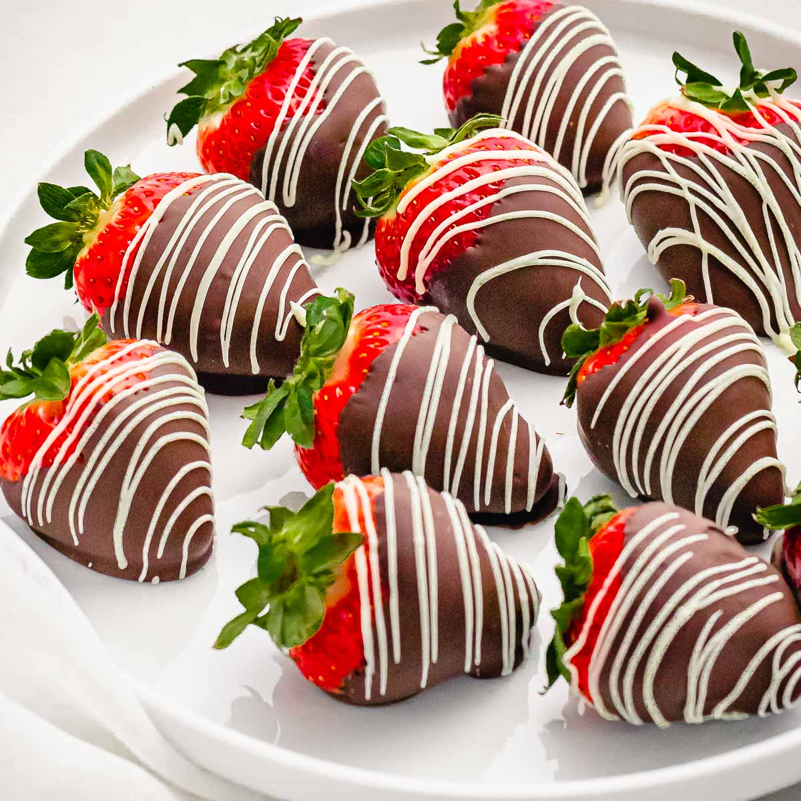

Strawberry Shortcake

Ingredients
For the strawberries
- 1-pound ripe strawberries
- 3 tablespoons sugar
- 1 ½ tablespoons lemon juice
For the shortcakes
- 2 cups all-purpose flour
- 3 tablespoons sugar, plus more for sprinkling
- 2 teaspoons baking powder
- ½ teaspoon baking soda
- 1 teaspoon kosher salt
- 1 teaspoon lemon zest (or 1 tablespoon orange zest*)
- 6 tablespoons cold unsalted butter
- ¾ cup plus 1 tablespoon cold buttermilk, plus more for brushing
- Optional: turbinado sugar for topping
How to make
- Preheat the oven to 400°F.
- Clean and slice strawberries. Zest and juice the lemon, reserving the zest for the shortcakes. Mix the berries with the 3 tablespoons sugar and 1 ½ tablespoons fresh lemon juice. Allow to stand at room temperature for 1 hour or more, which lets them macerate and release their juices. (Or, do up to 24 hours in advance and refrigerate: bring to room temperature before serving.)
- In a medium bowl, whisk the flour, sugar, baking powder, baking soda, salt, and 1 teaspoon lemon zest. Cut the butter into 1/2-inch pieces and use a pastry cutter to cut it into the flour mixture.
- Add the ¾ cup buttermilk to the flour and stir until all the buttermilk has just absorbed. Do not overstir. Use your hands to form the dough into a rough ball. Add the 1 tablespoon more buttermilk to help the dough come together.
- Turn onto a lightly floured counter. Gently pat the dough out into a rectangle about 8” x 10” and about 3/4” thick (you may need to wash, dry and flour your hands to help pat it out).
- Use a 3” biscuit cutter to cut the biscuits, pushing straight down (without turning the cutter) and transferring to a parchment lined baking sheet (you can also use a cookie cutter or use a knife to cut out a 3-inch circle). Ensure the edges of each biscuit are touching on the baking sheet to improve rise. You should get 6 biscuits out of the first cutting, then re-roll the dough scraps for final 2 biscuits.
- Brush tops with buttermilk. Sprinkle with additional sugar or use turbinado sugar for a crunchy, glittery topping. Bake 15 to 17 minutes until lightly golden brown on top. Allow to cool for 10 minutes. Store leftovers frozen for up to 3 months or refrigerated for a few days (reheat in a 350 degree oven until warm).
- Make the Homemade Whipped Cream (or try Infused Whipped Cream for a treat).
- To serve, cut the shortcakes in half. Top with strawberries and whipped cream, then the top of the shortcake and more whipped cream and strawberries.
Strawberry Cobbler

Ingredients
- 1/2 cup salted butter
- 1 cup self-rising flour
- 1 1/2 cups sugar divided
- 1 cup milk
- 1/2 teaspoon vanilla extract
- 4 cups strawberries hulled and halved
- vanilla ice cream optional
How to make
- Preheat oven to 350ºF. Melt butter in a 9×13 casserole dish in the oven as it preheats.
- Whisk together the flour, 1 ¼ cups of sugar, milk and the vanilla in a medium bowl while the butter melts. Pour into the melted butter without stirring.
- Add the remaining ¼ cup of sugar to the strawberries, tossing to coat. Spoon the strawberries into the butter and dough mixture without stirring.
- Bake until the cobbler crust has turned lightly golden brown and the cobbler is set throughout about 45 minutes. Remove from the oven and serve, topped with vanilla ice cream, if using.
Chocolate Covered Strawberry

Ingredients
- 10 ounce package Ghirardelli Baking Chips Bittersweet, semi-sweet, or milk chocolate
- 2 pounds fresh strawberries stems attached
How to make
- Start by washing the strawberries and then drying them VERY well. It's so important to dry the strawberries well because, as you may know, chocolate and water do not work well together! If the strawberries are the least bit wet the chocolate will not stick!
- If desired, add a handful of toppings, like crushed nuts or coconut, onto their own small plates. Line a sheet pan with parchment or waxed paper.
- Use a double boiler (instructions above in post) or microwave the chocolate for 30 second intervals, removing and stirring at each 30 second interval, until the chocolate has melted. Stir often, making sure not to burn the chocolate!
- Holding a strawberry by the stem, dip into melted chocolate, lift and twist slightly, letting the excess chocolate fall back into the bowl. At this point you may dip the strawberry in coconut or nuts (or leave it plain) and then place the strawberry on the parchment paper. Repeat with the rest of the strawberries.
- For a white chocolate drizzled strawberry, dip a fork in the melted white chocolate and drizzle the white chocolate over the dipped strawberries.
- Chill the strawberries until the chocolate sets, about 15 minutes.